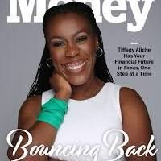

A five step ladder out of paycheck to paycheck living, a fresh budget every payday, and a London ledger down to the pound
Back to Blog Budgeting Payday US UK
Trell opens with a countdown and a promise. Five baby steps, delivered rapid fire, for anyone tired of watching pay evaporate before the next deposit lands. The clip runs through debt, a cash buffer, card discipline, retirement, and investing in under two minutes, and viewers responded at scale: 129,854 views, 15,513 likes, 303 comments, and 5,554 shares, an engagement rate of 0.2295 that dwarfs everything else on this page. The appeal is obvious. No theory, no fifty line spreadsheet, just a ladder with numbered rungs and a first step anyone can start this week. Strictness is the selling point, at least at first.
The question shadowing every system here is how much strictness a budget can carry before it breaks. A rigid ladder gets attention because it removes choice, yet the households that sustain a plan for years tend to describe something softer: a ritual that bends around real pay dates, real appetites, real London rents. The five creators below sort themselves along that line. Trell supplies the steel frame. Kumiko Love, Tiffany Aliche, Tatiana, and Mia McGrath supply the padding, the purpose, the worked example, and the guardrails, in that order.
Trell leads because the numbers demand it. No other clip here cracks six figures for views, while Trell clears 129,000 and converts a fifth of viewers into likes, saves, or shares. The format is a drill sergeant with a heart, beginning with the most expensive debt.
Trell
Alright, here are five baby steps to stop living paycheck to paycheck. Baby step one is to pay off your debt. You want to tackle the debt with the highest interest first.
Watch on TikTok (129,854 views, 15,513 likes, 303 comments, 5,554 shares). Steps three through five cover card discipline, retirement, and brokerage investing.
The remaining steps keep the same tempo. Step three treats the credit card as a debit card, spending only money already in the account. Step four directs 15 percent of income into a Roth IRA. Step five opens a standard brokerage account for anything beyond that. Biweekly payments, zero based allocations, and automatic transfers supply the enforcement, which explains both the loyalty and the limits of the approach. Viewers who want flexibility will find little, which is precisely why viewers who want certainty share it 5,554 times.
Kumiko Love answers rigidity with a gentler premise, delivered as Lesson 12 of a 30 day Money School series. The clip drew 2,512 views with 142 likes and a remarkable 305 comments, more conversation than applause. The thesis fits in two sentences.
Kumiko Love
Your budget should fit your life. You shouldn't have to fit your life into your budget. Welcome to Money School! This is lesson 12 of my 30 day series to finally understand money.
Watch on TikTok (2,512 views, 142 likes, 305 comments). Lesson 12 of a 30 day Money School series.
The method replaces one monthly budget with a fresh budget every payday, so each paycheck gets its own plan and its own constraints. Income that shifts in size or timing stops breaking the system, because the system is rebuilt on arrival rather than forecast a month out. Followers respond less with likes than with questions, hence the inverted ratio of 305 comments to 142 likes. Where Trell hands down commandments, Kumiko hands over a ritual, repeatable, forgiving, and timed to pay.

Tiffany Aliche
I don't need to look like I have money. I want to actually HAVE it. The real luxury is lack of worry, and so I much rather live under my means, with enough of a gap that as things swing, I am covered.
Watch on TikTok (2,129 views, 268 likes). Living under means through a revenue swing from ten million to five.
The pandemic supplied the proof. Revenue at her company ran to ten million dollars in a year, then fell by half, and daily life never touched the higher figure because the surplus had been stocked away while it lasted. That gap between earning and spending, maintained deliberately through both boom and comedown, is the system, more durable than any template because it travels with the earner. Tiffany never names a percentage or a payday ritual. The instruction is simpler: keep a margin large enough that swings land inside it.
Tatiana, a senior account director in London tech sales, provides the live demonstration. Posted on 1 October 2026 and watched 6,881 times with 722 likes, the video budgets a real month line by line. No hypotheticals, just net pay and allocations.
Tatiana
Come budget with me as a senior account director working in tech sales in London. My net pay was 5,961 pounds. My total net earnings this month was 6,196 pounds.
Watch on TikTok (6,881 views, 722 likes). Net pay 5,961 pounds, total net earnings 6,196 pounds.
The ledger closes with 1,400 pounds directed toward a hundred thousand pounds saving and investment goal, plus a 196 pounds buffer left deliberately unassigned. That buffer, defended with two words, Because life, is the whole philosophy in miniature: precision about the big transfer, forgiveness about the rest. Commenters see both Trell style discipline in the 1,400 pounds and Kumiko style adaptability in the 196 pounds. Theory becomes bookkeeping, and bookkeeping balances.
Mia McGrath sets the guardrails, and the audience is large: 66,796 views, 6,214 likes, and 358 shares. A multiple six figure net worth built in her 20s supplies the credential. The message is sequence, what must happen before investing starts.
Mia McGrath
So everyone's telling you to invest your money, but no one's ever properly sitting down and explaining to you how to actually do that step by step? If you don't know me, my name is Mia. I built a multiple six figure net worth in my 20s.
Watch on TikTok (66,796 views, 6,214 likes, 358 shares). Step by step investing after buffer and debt.
The prerequisites are unglamorous and non negotiable. Three months of living expenses saved, consumer debt cleared, and no invested money needed within five years. Only then does automation enter, ideally timed to payday so investing happens before spending can intervene. Mia thus bridges the strict and the supple camps: Trell grade thresholds on the way in, Kumiko grade rhythm once inside. The 358 shares suggest viewers pass the checklist to friends.
Where they agree, and where they split
On the foundation, all five vote the same way. Automation beats intention, precommitment beats improvisation, and an emergency buffer comes before anything ambitious. Trell demands a 2,000 dollars reserve before investing. Mia demands three months of expenses plus cleared consumer debt. Kumiko rebuilds the budget every payday so the buffer survives contact with variable income. Tiffany stocks the surplus before lifestyle can absorb it. Tatiana holds 196 pounds back for life itself. Different vocabularies, identical sequence: secure the floor, then build. Three passages capture the consensus.
"Baby Step 2. Save your first $2,000 in a high yield savings account. We call this the Emergency Fund because most Americans are one emergency away from homelessness."Trell (watch on TikTok)
"You should have at least three months worth of your living expenses saved up as an emergency fund. You also want to pay off any consumer debt. Don't invest any money you might need for the next five years."Mia McGrath (watch on TikTok)
"Instead of creating one budget for the entire month, I started creating a new budget every single time I got a paycheck. Every paycheck deserves its own budget."Kumiko Love (watch on TikTok)
The split opens on how tightly payday should bind. Trell prescribes biweekly payments, cards used as debit, and 15 percent to a Roth IRA, a cage that protects beginners from themselves. Kumiko prescribes the opposite motion, a fresh budget each paycheck that assumes last payday taught something. Tiffany sidesteps both with identity, a gap under means that survives a ten million to five million revenue fall without a single template. Tatiana demonstrates that discipline and slack coexist, 1,400 pounds locked to a hundred thousand pounds goal beside 196 pounds left for life. Two passages capture the split.
"During the pandemic, my company was making ten million dollars in a year, and then post pandemic, we make half that. I never lived to the ten million. With that excess money when it came in, I stocked it away."Tiffany Aliche (watch on TikTok)
"Which leaves me with a nice 1,400 pounds I am putting towards my hundred thousand pounds saving and investment goal. I do have a healthy buffer of 196 pounds. Because life."Tatiana (watch on TikTok)
The weight of voices favors adaptation over rigidity, with a caveat. Four of the five describe systems that bend, per paycheck budgets, identity margins, buffered ledgers, sequenced automation, while only Trell demands lockstep. Yet Trell also draws 129,854 views and 5,554 shares, multiples of the rest combined, suggesting rigidity is how beginners start and flexibility is how they continue. Systems that adapt survive; rigidity starts them.
Budget by paycheck, not by month, and automate the transfer on payday before spending begins. Clear expensive debt and build a cash buffer first, then invest only money unneeded for five years. Keep a margin under means large enough to absorb a lean month or a lost client. Leave a small buffer unassigned, because life bills what spreadsheets forget.
Keep reading: Budgeting Systems That Stick follows low buy years and reset systems, and Payday Is Plan Day covers the first hour after pay lands.
Nothing on this page constitutes financial advice. Figures quoted are self-described by each creator in their own TikTok videos, linked so you can check the source yourself.
Net worth figures are self-described by each creator in their own TikTok content and have not been independently verified. Nothing on this site constitutes financial advice. © 2026 SaveShare.io